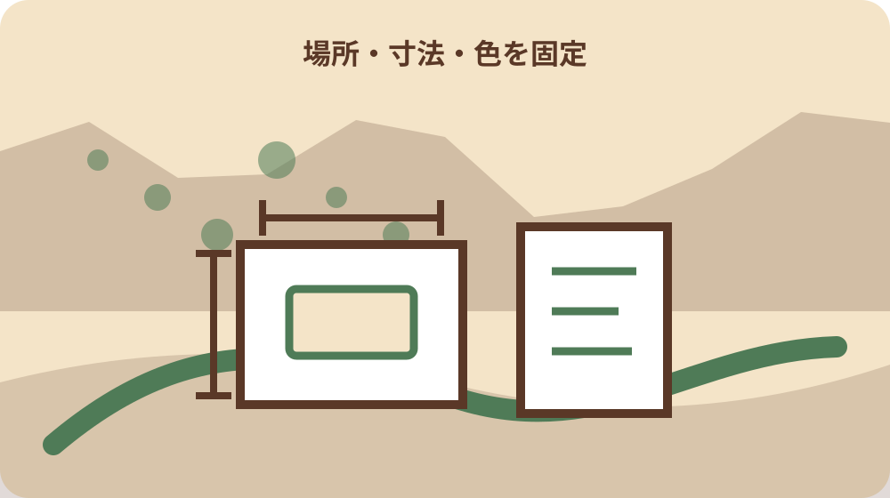
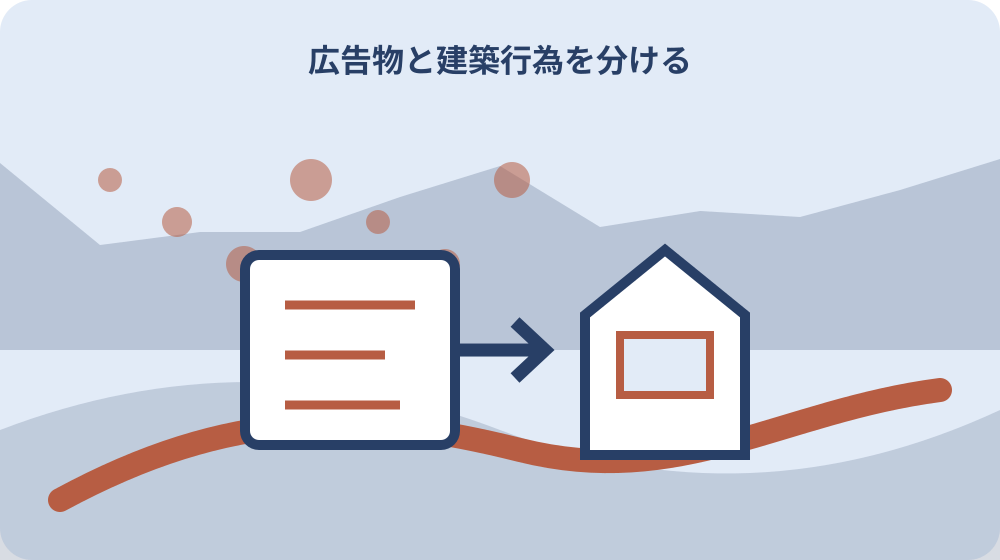

先に結論を確認する
この記事の答え：設置住所と広告物の寸法・構造を基に静岡県の屋外広告物許可を確認し、建築物や工作物の新築・外観変更を伴う場合は森町景観条例の届出対象も別に確認します。片方の確認だけで着工可とは判断しません。
森町で最初に照合する条件：看板だけを見るのではなく、設置場所の住所・道路・規制地域を静岡県の現行資料と所管窓口で確認する。
結論は県の広告物許可と町の景観届出を二列で確認する
森町で店舗や事業所の看板を出す前に作るべき答えは、許可が要るか要らないかの一語ではありません。確認票を二列にし、左へ静岡県の屋外広告物制度、右へ森町景観条例の届出制度を置きます。各列に対象、確認窓口、提出資料、回答日を書き、二つの確認が終わるまで工事発注を確定しません。
屋外広告物制度は、表示する物と設置場所を中心に確認します。森町の景観届出は、一定規模の建築物や工作物の建設等を中心に確認します。一つの看板工事が両方へ関わる場合もあれば、片方だけの確認で終わる場合もあります。制度名が似ていることを理由に、一方の回答をもう一方へ流用しません。
確認票の先頭には、設置住所、広告主、所有者、施工者、広告物の種類、表示面の縦横、地上からの高さ、支持方法、照明の有無、工事予定日を記します。未定の項目には未定と書きます。完成後に測り直して申請値との差が判明するより、発注前の図面で数値をそろえる方が修正範囲を小さくできます。
森町は2022年9月に景観計画を策定し、景観条例を2023年4月1日に施行しました。静岡県は屋外広告物の制度概要、許可基準、提出先、安全管理をそれぞれ案内しています。本稿は二つの制度を一枚に束ねますが、法的な判断を独自に置き換えず、最終回答は各公式窓口から得ます。
最初に住所・道路・広告物の形を一枚へ固定する
最初の調査対象は看板のデザインではなく場所です。同じ意匠でも、設置位置、道路との関係、土地の条件が違えば確認結果も変わり得ます。住所だけでなく、敷地内のどこへ置くかを住宅地図や配置図へ印し、道路境界からの距離、建物への取付位置、周囲から見える方向を残します。窓口には口頭の『店の前』ではなく図を渡します。
次に広告物を形で分けます。壁面へ取り付けるもの、自立柱で支えるもの、屋上に設けるもの、窓面へ表示するもの、一定期間だけ掲出するものでは、確認に必要な寸法や構造が同じとは限りません。表示面積だけを伝えず、支持部、枠、照明器具まで含む外形と地上高を図示します。両面表示なら面ごとの情報も区別します。
既存看板を替える場合は、新しい図だけでなく旧許可証、旧図面、現況写真を並べます。広告文だけの更新なのか、板面の拡大なのか、支柱交換なのか、取付位置の移動なのかを差分表にします。『同じ場所だから同じ扱い』とは決めず、既存手続の番号と今回変える部分を所管へ伝えます。
住所・位置・形を固定した一枚は、施工会社への見積依頼にも使えます。ただし、施工会社が作る見積書は行政回答の代わりではありません。所有者が確認責任者を決め、誰がどの資料で県と町へ相談したかを記録します。借地やテナントなら、土地・建物所有者の承諾確認も行政手続とは別欄へ置きます。

屋外広告物に当たるかを県制度の入口で確かめる
県制度の入口では、名称の印象で対象外と決めません。会社名、商品名、案内矢印、催事告知など、表示内容と掲出方法を具体的に伝えます。静岡県公式ページは制度概要と許可手続・許可基準を分けているため、まず概要で対象の考え方を読み、その後に予定地と広告物の条件を許可手続の資料へ照合します。
小さい、短期間、敷地内という事情だけで届出不要を推定するのは避けます。適用除外や許可不要の条件を利用する場合も、どの公式資料のどの条件へ該当すると確認したかを記録します。免除の根拠が担当者との会話だけなら、相談日、部署、回答の前提となった寸法や期間を確認票へ残します。条件が変われば再確認します。
案内看板のように、広告する店舗の敷地から離れた場所へ置く計画は、設置場所の所有者承諾だけで完結しません。道路沿いのどの地点か、進行方向からどのように見えるか、恒久設置か一時掲出かを示します。複数地点なら一括して『町内数か所』と書かず、地点番号を振って一地点ずつ判定結果を残します。
県の公式入口にはガイドブック、法令資料、提出書類、窓口一覧への導線があります。検索結果の古い様式だけを直接保存せず、入口ページから現行資料へ進みます。確認票には資料名、ページ更新状況、取得日を記し、広告制作会社へ渡す版にも同じ取得日を付けます。これで後から制度改定との前後関係を確認できます。
規制地域と許可基準は設置場所ごとに読む
許可の要否や基準は、広告物だけでなく場所と組み合わせて読みます。県公式ページには規制地域の指定に関する更新情報も掲載されます。別地域の事例や過去の看板を根拠にせず、森町の予定地点を現行の区域資料で確認します。地図上の境界付近なら、自己判断で線の内外を決めず所管窓口へ位置図を示します。
確認票には規制地域名、参照した図面名、版または公表日、確認日を書きます。道路名だけでは同一路線のどこかが曖昧になるため、交差点、地番、座標など窓口が再現できる情報を添えます。移転候補が二か所なら、看板仕様が同じでも二行に分けます。一方の回答を別地点へ転記しないためです。
許可基準を読むときは、面積、高さ、色彩、照明、構造などのうち計画に関係する欄を抜き出します。数値を転記した人、設計図で照合した人、窓口へ確認した人を分けても構いません。重要なのは、基準を満たすという結論だけでなく、どの寸法をどの図面で比べたかが後から追えることです。
周辺の既存看板が大きいことは、新設計画が許可される根拠にはなりません。既存物には設置時期や手続状況など外から分からない事情があります。現地観察は見え方や安全上の懸念を把握する材料にとどめ、許可基準の確認は静岡県の現行資料と所管回答へ戻します。写真には撮影日と向きを付けます。
森町景観条例は建築行為の規模から別判定する
森町公式ページは、一定規模の建築物・工作物の建設等に景観条例と景観法第16条に基づく届出が必要だと案内しています。ここで確認するのは、屋外広告物許可を得たかどうかではなく、予定する建築行為が町の届出対象に当たるかです。看板の支持工作物や建物外観の工事内容を、町の手引へ照合します。
町のページには届出の手引、添付図書、Q&A、様式が用意されています。まず手引で対象規模と手続時期を確認し、Q&Aで迷いやすいケースを読みます。ただし、Q&Aの一例へ形が似ているだけで結論を出しません。配置、規模、工事の種類を伝え、今回の計画として確認します。
一つのプロジェクトで店舗新築、外壁塗装、看板設置を行うなら、工事名を『店舗改装一式』で終わらせません。建物本体、外構・工作物、広告表示へ分け、町の届出対象確認を各行に付けます。届出対象外との回答を得た場合も、回答日と提示した図面版を残します。後の設計変更で前提が崩れることがあるためです。
森町景観計画の本編と概要版は、地域の景観形成を理解する資料です。届出基準だけを最低条件として読むのではなく、周囲の山並み、集落、道路景観と計画の関係を設計者と確認します。ただし景観への配慮という評価と、届出の法的要否は別欄にします。良い意匠だという感想で手続確認を省きません。
看板工事と建物外観変更を同じ工事名で隠さない
外壁へ看板を付ける工事では、広告面の設置だけでなく、下地補強、外壁色の変更、照明配線、庇や柱の改変が含まれることがあります。見積書が一式表示でも、行政確認票では行為を分解します。県へは広告物の仕様、町へは建築物や工作物の変更内容を、それぞれ理解できる図面で示します。
設計途中で看板を小さくした場合も、確認がすべて不要になったと早合点しません。高さ、支持方法、設置場所、外観変更の範囲が残る場合があります。変更前後の図を版番号付きで保存し、県と町のどちらへ再確認したかを記録します。電話で済ませた場合は、変更点を読み上げたメモを残します。
複数業者が関わると、建築設計者は景観届出を、看板業者は広告物許可を相手が行うと思い込むことがあります。発注者は手続分担表を作り、制度名、作成者、提出者、回答受領者、期限を割り当てます。『施工会社対応』ではなく会社名と担当名まで明記し、許可証や受付控えの保管先を決めます。
テナント退去時の原状回復も最初に考えます。看板撤去だけか、支持物や基礎も除くか、外壁の穴や色を戻すかを契約資料と照合します。行政上の変更・除却手続が必要かは、着工前の相談時に併せて質問します。将来の担当者が設置時資料を探せるよう、物件台帳へ保管場所を記します。

相談時は図面・寸法・色・工程をそろえる
窓口相談の精度は、質問文より提示資料で変わります。位置図、配置図、立面図、広告面の寸法図、構造図、色彩資料、照明仕様、現況写真、工事工程表を用意します。すべて完成図でなくても、未定部分を明示すれば、どの条件が結論を左右するかを聞けます。資料には同じ案件名と版日を付けます。
色は『茶色系』のような言葉だけで伝えず、設計資料で使う色番号や印刷見本を添えます。照明は有無だけでなく、内照、外照、点灯時間、光の向きを記します。構造は看板面だけでなく、柱、基礎、建物への取付部も示します。担当窓口が不足資料を示したら、確認票に追記して再提出日を残します。
工程表には、デザイン確定、申請資料完成、行政確認、発注、製作、現場工事、表示開始を分けます。許可や届出の前に製作を始めると、条件修正で作り直しが生じ得ます。県が示す標準処理期間は補正期間を含まないため、資料不足の往復も見込んだ日程にします。開店日から逆算して無理な提出日を置きません。
相談後は、回答を『問題なし』だけで記録しません。どの制度について、どの図面版を前提に、誰が、いつ、何を回答したかを書きます。追加手続、修正条件、次の提出先も別項目にします。公的な判断と設計者の提案が混ざらないよう、行政回答は引用せず要点を記録し、私案には提案者名を付けます。
申請先と提出方法を制度ごとに記録する
静岡県公式ページは提出書類・提出先、様式集、電子申請、相談窓口を分けて案内しています。まず予定地を管轄する窓口を確認し、紙か電子か、必要部数、添付形式、手数料の納め方を現行案内で確かめます。検索で見つけた様式ファイルだけを保存すると、提出先や改定情報を見落とすため、入口ページも記録します。
森町の景観届出は町公式の届出制度ページから手引と様式へ進みます。行為着手、変更、完了に関する様式が並ぶため、最初の届出だけで台帳を閉じません。今回必要な様式名、提出予定日、添付図書、担当部署を町列へ記します。県列の受付番号を町列へ誤記しないよう、番号には制度名を添えます。
電子申請が可能な手続でも、すべての案件や添付資料が同じ方法とは限りません。静岡県は県土木事務所へ申請する一部手続について電子申請を案内しています。自分の案件が対象か、原本や手数料の扱いがどうなるかを確認し、送信完了画面だけで受理と決めず受付状況を確認します。
提出した一式は、提出日フォルダーへそのまま保存します。後で修正版へ上書きせず、提出版、補正版、承認後版を分けます。ファイル名には案件、制度、図面種別、版日を入れます。紙提出なら控えの受領方法を事前に尋ね、電子提出なら受付通知をPDF等で保管します。共同作業者が同じ版を見られる状態にします。
許可期間と更新準備を開店後の予定へ入れる
看板は設置できた時点で管理が終わりません。静岡県は屋外広告物の許可期間更新について、満了のおおむね2か月前に案内を送り、満了のおおむね30日前までの提出を案内しています。許可証を受け取ったら、許可番号、期間、満了日、更新担当、点検予定を物件台帳へ転記します。
県が示す更新申請の標準処理期間は25日で、補正期間は含まれません。30日前という案内を最短の準備開始日と捉えず、現況確認、写真、点検、所有者承認、申請書作成に必要な日数を前へ足します。繁忙期や担当交代も考え、満了日の数か月前に社内通知が出るよう予定を設定します。
更新案内の送付先が古いままだと、期限管理が案内頼みでは危険です。所在地、法人名、代表者、管理担当、連絡先が変わったら、必要な変更手続を公式窓口へ確認します。許可期間中に広告内容、面積、照明、構造を変える計画が出た場合も、更新時まで待たず変更前に手続の要否を確認します。
手数料は固定値として社内資料へ永久保存しません。静岡県は2026年4月1日から屋外広告物許可申請手数料の一部を改定しました。予算表には確認時点の額と公式ページ取得日を記し、実際の申請前に再確認します。制作費と行政手数料を分けると、改定時に見積全体を作り直さずに済みます。
変更・撤去・完了の時点でも記録を閉じる
工事中に寸法や色が変わったら、現場判断だけで進めず提出版との差を表にします。森町公式ページには変更や完了に関する様式があります。県の広告物許可についても変更内容に応じた手続を所管へ確認します。小さな差と見えても、許可・届出の前提となった項目かどうかは制度ごとに判断します。
完成時には、許可図面の寸法、設置位置、表示面、支持構造、照明を現況と照合します。写真は正面だけでなく、道路側、側面、取付部、周辺との関係が分かる角度で撮ります。撮影日、撮影方向、撮影者を付け、完成図と同じフォルダーへ保管します。完了届の対象なら、提出日と受付を記録します。
撤去時も看板面を外して終わりとは限りません。支柱、基礎、配線、取付金具が残るかを確認し、除却に必要な手続を窓口へ尋ねます。町の景観届出で扱った工作物や建物外観に変更が生じるなら、町側の確認欄も開き直します。撤去写真と手続完了日を残し、許可台帳を未設置状態へ更新します。
事故や強風後の点検記録は、更新申請とは別に蓄積します。静岡県公式ページは屋外広告物の安全管理を独立して案内しています。傾き、腐食、緩み、照明器具、基礎など、看板の形式に応じた点検項目を所有者と管理者で決めます。不具合を見つけたら表示継続の判断を施工者任せにせず、安全確保を優先します。
大石の視点：二つの受付番号を工事台帳へ残す
ここからは公的制度そのものではなく、大石の実務上の提案です。看板案件の工事台帳に『県・屋外広告物』と『町・景観届出』の二欄を常設し、該当しない場合も空欄ではなく、確認先、確認日、対象外と判断した前提を書きます。二つの欄があれば、担当者交代時にも確認漏れを発見しやすくなります。
受付番号が交付されたら、番号だけでなく提出版のファイル名と結び付けます。同じ案件名でも、広告面の差替え、外壁改修、増設で図面版が増えるからです。行政から示された条件は行政回答欄へ、色や配置を良くする社内案は提案欄へ分けます。私見を許可条件のように伝えず、許可条件を任意提案のように弱めません。
もう一つの提案は、発注承認のチェック欄に両制度を入れることです。デザイン承認や金額承認だけでは、手続未確認のまま製作へ進む余地が残ります。『県確認済み』『町確認済み』『所有者承諾済み』『提出版固定』の四点を承認者が見てから発注する流れにすれば、製作後の変更リスクを抑えられます。
この方法は、必ず許可が必要だと決めつけるものではありません。案件ごとに公式資料と所管窓口へ確認した結果を残すための整理法です。制度改定があれば台帳の結論を更新し、古い回答を削除せず履歴として保ちます。いつの図面と制度を基にした判断かを見えるようにすることが目的です。
最終確認票で着工判断と未確認事項を共有する
着工前の最終確認票は、案件名、住所、広告物仕様、建築行為、県制度の結果、町制度の結果、所有者承諾、図面版、許可・受付番号、条件、未確認事項、確認者、確認日を一ページにまとめます。添付資料の一覧を付け、原本の保存場所も記します。結論だけをメール本文へ散らしません。
未確認事項が残る場合は、影響する工程を示します。例えば色の最終値だけが未定なら、その変更が県許可や町届出へ影響するかを先に尋ねます。区域判定や規模判定が未確認なら、製作や基礎工事を保留します。全部が決まるまで何もしないのではなく、行政判断に影響しない準備と着工を分けます。
完成後は最終確認票へ完成日、現況写真、完了・変更手続、許可期間、次回点検、更新準備日を追記します。これで一枚が申請前の判断票から維持管理の入口へ変わります。店舗閉鎖や看板撤去の際にも同じ台帳を開き、撤去後の状態と必要手続を確認できます。
公式ページの内容は更新されます。本稿の数値や日付を申請時の確定回答として使わず、静岡県の屋外広告物ページと森町の景観計画・届出制度ページを開き直してください。変更のない案件でも取得日を更新し、迷う条件は図面を添えて所管窓口へ確認します。それが着工判断を他者へ説明できる最短の手順です。